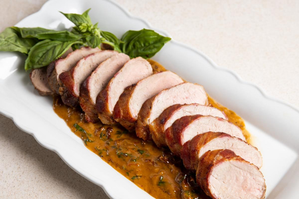

Pork

Bacon-Wrapped Pork Tenderloin with Sun-Dried Tomato & Basil Beurre Blanc
Because everything's better with bacon.
Ingredients
- 2 pork tenderloins, trimmed
- 2 slices bacon
- Salt and black pepper to taste
- 1 tablespoon garlic, minced
- ½ cup julienned sun-dried tomatoes in oil, drained (reserve oil)
- ¼ cup white wine
- ½ bunch basil, chiffonade
- ½ cup cream
- 1 stick butter or ¼ pound, cut into 8 small cubes
Steps
- Preheat oven to 400°F.
- Trim all visible fat from tenderloins. Season with salt and pepper and wrap each tenderloin with one piece of bacon; use wooden toothpicks to hold bacon in place.
- Sear in hot pan to brown the bacon, then finish in oven until the internal temperature of the meat is 145°F. Remove from oven and let rest.
- For the sauce, sauté the garlic in 1 tablespoon of the reserved sun-dried tomato oil. Be careful not to brown the garlic as it will make the sauce taste bitter.
- Deglaze the pan with the white wine and let reduce until all the wine has evaporated. Add the sun-dried tomatoes and basil and sauté for 1 minute. Stir in the cream and reduce by two thirds.
- Remove from heat and stir in butter, one small cube at a time until all butter is incorporated. This step must be done off the heat or the sauce will break and appear oily.
- Add salt and pepper to taste.
- Serve immediately, sliced and placed atop a bed of sauce on each plate.